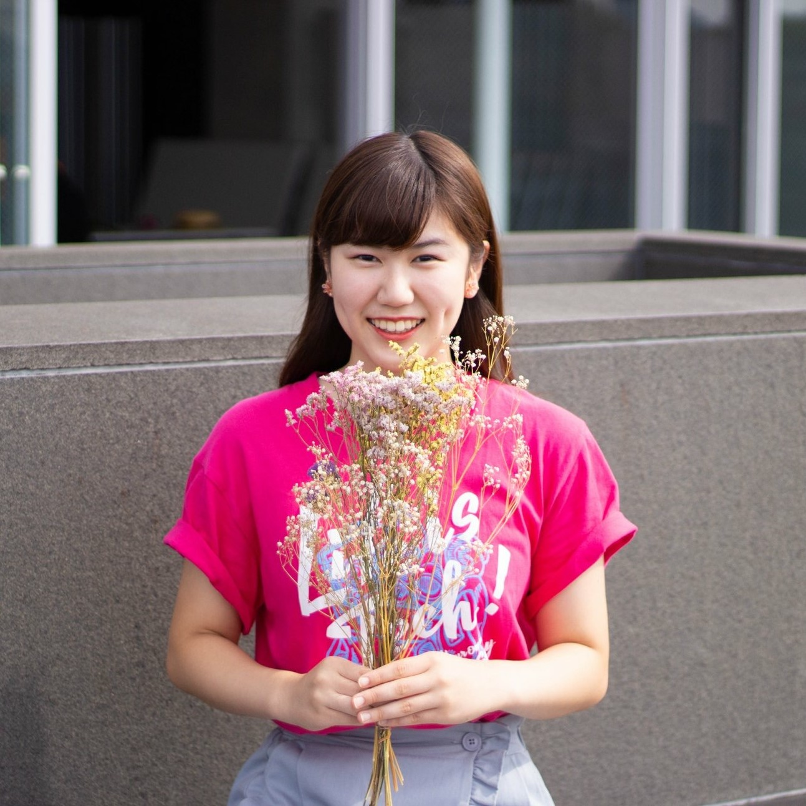

About

吉澤 彩花
1998年、東京生まれ。
現在は、明治大学理工学部情報科学科3年在学中。
大学に入学後から、C/Javaを使い、コンピュータの基礎を学ぶ。
2018年夏からは、ライフイズテック株式会社にてWebデザイナー /
LINEスタンプ / デザイナー / Androidコースのメンターとして働く。
Work
Meiji Student Project
Life is Tech株式会社Leaders研修の最終制作物。
明治大学の「学生プロジェクト」という団体がオープンキャンパス当日に行うイベントを受験生に紹介するサイト。
限られたオープンキャンパスの時間の中で、大学をよく知り、入りたいと思える企画を前もって知って来てほしいという思いから作成しました。
制作時期 : 2018.05 - 06
制作期間 : 1ヵ月
サイトはこちら

Yoshizawa Ayaka Portfolio
本サイト。
制作時期 : 2019.04 - 05
制作期間 : 1ヵ月
センタクindex
Android App
Life is TechのLeaders for Schoolで制作。
洗濯が大変なおしゃれ着を一着ずつ、おすすめの洗濯日を教えてくれるアプリ。
将来の展望としては、画像も一緒に保存できるようにして、クローゼット替わりにも使ってもらえるようにしたいと思っています。
使用言語 : Java
制作時期 : 2019.03 - 05
制作期間 : 2ヵ月
Skill
HTML5 / CSS / jQuery / java / C
Illustrator / Photoshop / Premire